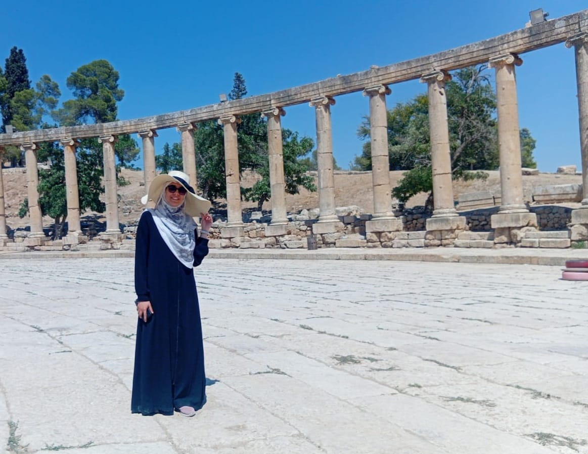

Name : Hala Osama Hamdan` Major: Software engineering Acadamic year: third year soft skills:
| Course/Tool | external website |
|---|---|
| C# | C# documentation |
| Python | Python documentation |
| Java | Java documentation |
| Database | Database documentation |
In four years, I see myself establishing a strong foundation in cybersecurity as a skilled specialist, with a particular focus on digital forensics and cloud security. Having completed my engineering degree, I aim to apply my technical background directly to analyzing security incidents, investigating digital evidence, and securing cloud infrastructures against evolving threats.
I plan to earn industry-recognized certifications, such as the Certified Ethical Hacker (CEH) or AWS Certified Security Specialist, to validate and sharpen my practical expertise. Additionally, I intend to begin pursuing postgraduate studies in cybersecurity or information assurance to deepen my theoretical understanding and research capabilities. Ultimately, my goal is to contribute meaningfully to protecting critical organizational systems while continuously advancing my skills in an ever-evolving field.
Contact Information:hohamdan24@cit.just.edu.jo